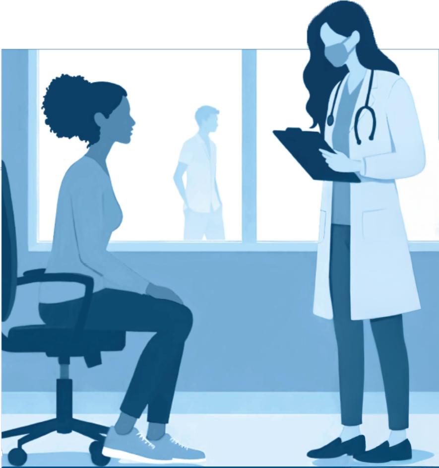

Understanding the Physical and Psychological Health and Wellness Needs of Minor Sex Trafficking Victims
This study was funded by the National Institute of Justice, Office of Justice Programs, U.S. Department of Justice (2020-VT-BX-0111). It examines the health needs of young survivors of commercial sexual exploitation (CSE) in the U.S., utilizing survey data from 534 youth (ages 13-24) and in-depth interviews with 35 adult survivors to address critical gaps in research. It explores short- and long-term physical and psychological health concerns, elevated risk behaviors such as substance use and unsafe sexual practices, and the impact of CSE on overall well-being. Additionally, it assesses survivors’ access to healthcare services, the types of care they receive, and the barriers they face in obtaining necessary support. The findings underscore the urgent need for targeted interventions and improved healthcare accessibility to address the complex health challenges experienced by this vulnerable population.
Introduction
The commercial sexual exploitation (CSE) of minors in the United States is a critical public safety and health issue, yet research specific to young people affected by CSE has been limited, often constrained by small, geographically specific samples. This study aims to address these gaps by utilizing a geographically diverse, representative sample of young people aged 13-24 who have experienced or are at high risk for CSE victimization. The research includes quantitative survey data from 534 youth across multiple regions of the U.S., offering a broader understanding of their healthcare needs and challenges.
In addition, the study incorporates in-depth interviews with 35 adult survivors who experienced CSE as minors, providing valuable insights into the long-term effects of exploitation, healthcare access barriers, and recovery challenges. This mixed-methods approach helps illuminate the complex physical and mental health impacts of CSE, including trauma, substance use, and reproductive health issues.
The findings from this study are critical for shaping healthcare policies, improving service delivery, and enhancing the identification and support of young CSE survivors, ultimately contributing to more effective strategies for addressing their health needs.
Explore Research Questions
Note
This project received an award from the National Institute of Justice, Office of Justice Programs, U.S. Department of Justice (2020-VT-BX-0111). The views, findings, conclusions, and recommendations presented in this document belong to the authors and do not necessarily represent those of the U.S. Department of Justice or Northeastern University, University of New Hampshire, Boston University, RTI International, their trustees, or their funders.